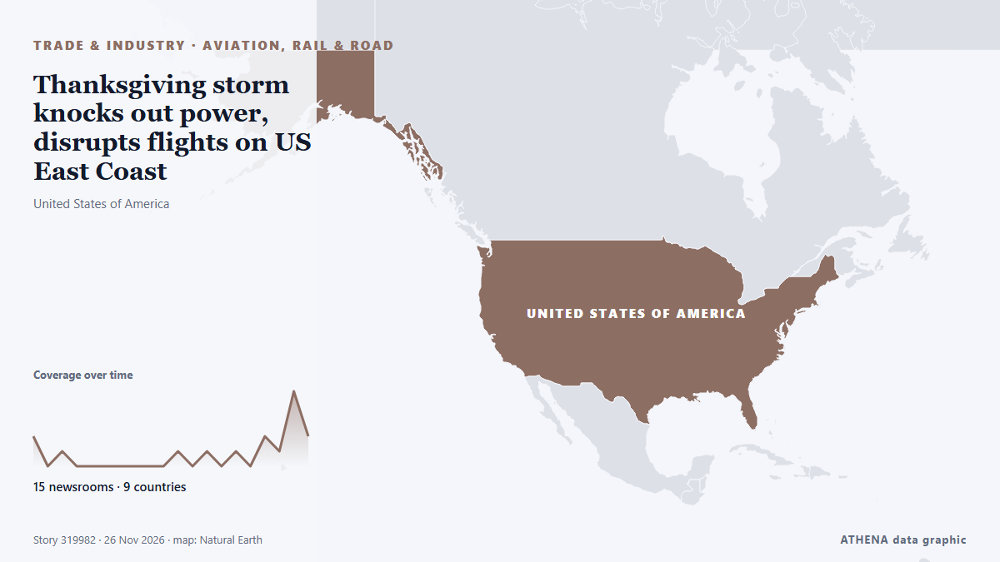

Aérien, rail et route
SponsoriséPrésenté par  Cybernetics and Artificial Intelligence Lab Welcome to the Cybernetics and Artificial Intelligence Laboratory, established at the Department of Business Administration of the National and Kapodistrian University of Athens. The lab is headed by Professor Dimitrios Thomakos. The lab aims to do research that can be published in top venues. Our research uses tools and methods of Artificial Intelligence, and lies in the following areas: - Forecasting - Decision making - Cyber security - Finance We are always looking forward to collaborating with exceptional students!
Cybernetics and Artificial Intelligence Lab Welcome to the Cybernetics and Artificial Intelligence Laboratory, established at the Department of Business Administration of the National and Kapodistrian University of Athens. The lab is headed by Professor Dimitrios Thomakos. The lab aims to do research that can be published in top venues. Our research uses tools and methods of Artificial Intelligence, and lies in the following areas: - Forecasting - Decision making - Cyber security - Finance We are always looking forward to collaborating with exceptional students!
| 14 nov. | 0 |
|---|---|
| 15 nov. | 0 |
| 16 nov. | 0 |
| 17 nov. | 0 |
| 18 nov. | 0 |
| 19 nov. | 0 |
| 20 nov. | 2 |
| 21 nov. | 0 |
| 22 nov. | 1 |
| 23 nov. | 8 |
| 24 nov. | 4 |
| 25 nov. | 6 |
| 26 nov. | 3 |
| 27 nov. | 0 |
Les titres sont affichés en anglais, tels que publiés.

Thanksgiving storm knocks out power, disrupts flights on US East Coast
More than 836,000 US utility customers had no power. de The Straits Times
Flydubai To Resume Flights To Israel On December 3
The airline's flights to Israel had been suspended after one of its aircraft, travelling from Dubai to Tel Aviv, was forced to make an emergency landing in Saudi Arabia in September. de NDTV World
Belgium: Farmers and tractors descend on Brussels to defend EU subsidies
Around 200 representatives of European farming unions marched through Brussels, Belgium, on Thursday 26 November 2026 to protest against proposed cuts to the European Union's Common Agricultural… de Euronews English
Flydubai to resume Dubai–Tel Aviv flights from December 3 after two-month suspension
Flydubai will resume flights between Dubai and Tel Aviv on December 3 following a two-month suspension and approvals from the relevant authorities. de Arabian Business
'King tide' waves batter California coast, soaking San Francisco
Massive waves carried on king tides battered California's coast Wednesday, prompting evacuations and soaking San Francisco, but sparing feared mass disruptions to Thanksgiving holiday travel. de Phys.org
In Lebanon, the opening of a second airport reflects political shifts
Kleiat Airport, located on the Mediterranean coast, about 20km from the border crossing to Syria, will offer another gateway to Lebanon. de The Straits Times
Unionized rail workers to launch work-to-rule campaign Thursday
SEOUL, Nov. 25 (Yonhap) -- Unionized workers of Korea Railroad Corp. de Yonhap (English)
CJP’s Saurav Das moves Delhi HC after being stopped from travelling to UK
The Ministry of External Affairs said the passport office had asked Das to respond to a notice over alleged discrepancies and not use the document until then. de Scroll.in
Sri Lanka allows Indians to travel without ETA approval temporarily | What travellers should know
Sri Lanka has temporarily waived prior ETA approval for Indian travellers while its ETA system undergoes maintenance. de Livemint
Assam’s Silchar set to get new greenfield airport as Cabinet approves Rs 2,014-crore project
AAI to develop airport at Doloo to overcome capacity constraints at the existing civil enclave. de The Hindu BusinessLine
Indonesia foils attempts to smuggle 25.8kg of gold to Malaysia this month
JAKARTA: Indonesian customs authorities have foiled three attempts this month to smuggle 25.8kg of gold worth an estimated 62.5 billion rupiah (RM14.06 million) to Malaysia. de New Straits Times
MAG to acquire 10 Boeing 787 Dreamliners with option for 6 more
MAG president and group CEO Nasaruddin A Bakar says Malaysia Airlines will be the first Malaysian airline to operate the 787 Dreamliner variant. de Free Malaysia Today
China Southern Airlines unit to buy 50 Boeing 737-8 planes
The agreement marks the US planemaker's first major order from China in almost a decade. de Al Jazeera English
Flights delayed at Chicago O’Hare airport as ground radar system suffers outage
Chicago’s O'Hare International Airport faced a brief ground stop due to staffing challenges at TRACON, which spanned from 10:40 am to 12:15 pm, coinciding with the Thanksgiving travel rush. de Times of India
Flights cancelled in Belgium due to cost-of-living strike
A series of strikes have hit Belgium in recent months as the prime minister struggles to agree a budget to cut costs. de BBC News
Construction of railway under Trump Route project in Armenia to begin in 2027
Preparatory work is currently underway in the area. de TASS (English)
PM Modi Announces Rs 15,000-Crore Development Package For Nepal
The two leaders virtually laid the foundation of several India-assisted projects in Nepal and flagged off a cross-border passenger rail link between Ayodhya in Uttar Pradesh and Janakpur Dham in… de NDTV World
Saddam Hussein's Boeing 747 could be yours for $900,000
An Iraqi government plane used by former dictator Saddam Hussein has been put up for auction with an estimated value of $900,000. de The National
Disruptions to regional trains, buses, trams on 2nd day of public transport strike
Public transport users can again expect disruptions to regional trains, buses, and trams today. de NL Times